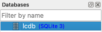

2 The Library Checkouts Database
We’ll be working with the Library Checkouts Database, a fictitious SQLite database about how and what a library keeps track of when lending books. This includes information like:
- Books and their details: title, author, genres, etc…
- People who sign up for a library card: Name and contact info
- Checkouts of books by who and when etc…
Why would a library want to track this information in a database?
- Data management
- Centralized location for all data being tracked
- Computerized and reduces manual processes
- Use SQL to get insight
- With SQL the library can answer questions like:
- Which books are being checked out?
- What types of books are being checked out?
- Which books are overdue?
- With SQL the library can answer questions like:
For more detailed information on how the SQLite database was put together, refer to the GitHub repository here.
2.1 Entity Relationship Diagrams
An entity relationship diagram ERD is a visual representation of a relational database. ERDs help with understanding what data is available, how the data is stored, and how tables and columns are related. These details are important for determining what types of questions you can answer with SQL!
Here’s an ERD for the Library Checkouts database:

Lets break down the components of the ERD:
- Entities represent the tables in the database.
- Attributes represent the columns in the database.
- Data Types: Each attribute is made up of a certain data type. The most common data types you’ll interact with are numeric, string, date, or boolean.
- Primary Key (PK): This is a column(s) that uniquely identifies a row in a table.
- Foreign Key (FK): This is a column that references a primary key. It’s used to identify a relationship between tables.
- Relationships between tables are represented with lines connecting one entity to another
- The symbols at the end of the lines represent cardinality, the number of rows between two database tables.
NOTE:
The Library Checkouts ERD was made with the diagramming software Lucidchart. Lucidchart also does an excellent job of breaking down Entity Relationship Diagrams here.
2.2 Data Definitions
Below are the data definitions of the tables and columns in the Library Checkouts Database.
| column | description | data type |
|---|---|---|
| id | unique id of the user | integer |
| first_name | first name of the user | text |
| last_name | last name of the user | text |
| birth_date | birth date of the user | date |
| phone | cell phone of the user | text |
| email address of the user | text | |
| address | address where the the user lives | text |
| city | city where the user lives | text |
| state | state where the user lives | text |
| zip_code | zip code where the user lives | integer |
| column | description | data type |
|---|---|---|
| id | unique id of the book checkout | integer |
| user_id | id of the user who checked out a book | integer |
| book_id | id of the book that was checked out | integer |
| checkout_date | date the book was checked out by the user | date |
| days_checking_out | number of days the user will check out the book for | integer |
| due_date | date the book is due based off days_checking_out | date |
| return_date | date the book was returned by the user | date |
| days_checked_out | number of days the book was checked out for | integer |
| returned_with_damage | a number to distinguish whether the book was returned with damage 0 = the book was not returned with damage 1 = the book was returned with damage |
integer |
| column | description | data type |
|---|---|---|
| id | unique id of the book | integer |
| title | title of the book | text |
| author | name of the author | text |
| isbn | isbn of the book | text |
| date_published | date the book was published | date |
| publisher | publisher of the book | text |
| format | the format of the book Ex) Hardcover | text |
| pages | the number of pages the book has | integer |
| column | description | data type |
|---|---|---|
| book_id | id of the book | integer |
| genre_id | id of the genre | integer |
| column | description | data type |
|---|---|---|
| id | unique id of the genre | integer |
| name | name of the genre | text |
2.3 SQLiteStudio

To work with our database, we’ll use SQLiteStudio. It’s a free, open source, multi-platform desktop application for browsing SQLite databases and writing SQL queries.
SQLiteStudio has a number of tools and panes to help you interact with your data:

You can view databases in the pane outlined in green. You can also write and run queries in the editor pane outlined in orange.
2.3.1 Load the Database
- Click the “Add a database” icon
 [3] and the Database Dialog Window will pop up.
[3] and the Database Dialog Window will pop up.

Database Dialog Window
- Click the “Browse for existing database file on your local computer” icon

- Your computer file explorer window will pop up
- Navigate to the
lcdb.dbfile on your computer and double-click- The Database Dialog Window will appear again
- Click the “OK” button
 at the bottom right
at the bottom right
- The
lcdb.dbfile will load to the left under the Databases Pane of the interface (outlined in green)
- The
- Click
lcdbunder the Databases Pane to highlight- 
- Click the “Connect to the database” icon
 [4]
[4]
- You are now connected to the database and can execute SQL to the database!
2.3.2 Load the SQL Script
- Click the “Open SQL editor” icon
 [1]
[1]
- The SQL Editor Pane of the interface will appear (outlined in green)
- Click the “Load SQL from file” icon [2]
- Your computer file explorer window will pop up
- Navigate to the
intro_to_sql_spring22.sqlfile on your computer and double-click- The SQL file will load in the SQL Editor Pane. This is where we’ll write our SQL queries!
- Click the “Save SQL to file” icon
 to save the queries you write to
to save the queries you write to intro_to_sql_spring22.sql